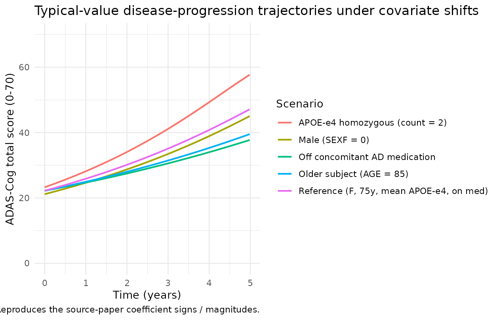
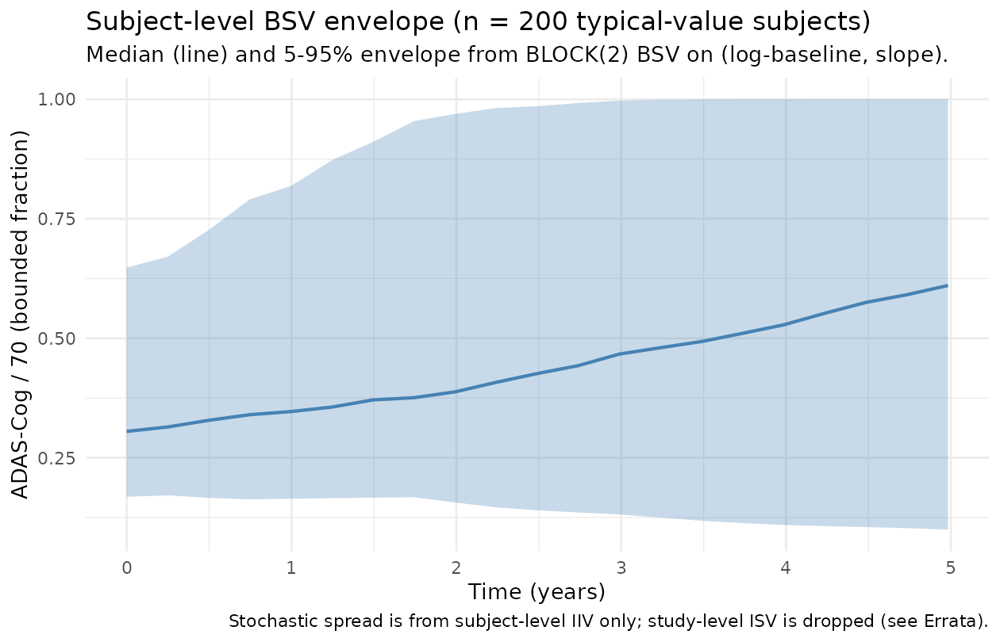

Conrado_2014_alzheimer
Source:vignettes/articles/Conrado_2014_alzheimer.Rmd
Conrado_2014_alzheimer.RmdModel and source
- Citation: Conrado DJ, Denney WS, Chen S, Ito K. (2014). An updated Alzheimer’s disease progression model: incorporating non-linearity, beta regression, and a third-level random effect in NONMEM. J Pharmacokinet Pharmacodyn 41(6):581-598.
- Article: https://doi.org/10.1007/s10928-014-9375-z
- PubMed: PMID 25168488
- DDMORE Foundation Model Repository entry: DDMODEL00000290
This is a disease-progression model for the Alzheimer’s Disease Assessment Scale - cognitive subscale (ADAS-Cog) total score, fit to ~25,000 longitudinal ADAS-Cog observations from 4,494 subjects across 15 randomised-controlled-trial arms in the Coalition Against Major Diseases (CAMD) Alzheimer’s database. Three distinguishing features of the publication:
- Bounded non-linear growth. The expected ADAS-Cog score is parameterised by a Richards three-parameter logistic growth function whose upper asymptote is the upper boundary score 70, replacing the linear / log-linear progression form used in earlier ADAS-Cog disease-progression models.
-
Beta-regression residual. The residual distribution
on the bounded fraction
ADAS_NORM = ADAS / 70is a Beta distribution with precision parameter , which naturally accommodates the heteroscedasticity inherent to a bounded outcome (variance shrinks at the boundaries 0 and 1). - Three-level random-effects structure. Inter-individual variability is modelled at both the subject level (BSV) and the study level (ISV); the latter – a level beyond the standard subject-level NONMEM random-effects layer – is the publication’s headline methodological contribution.
The DDMORE bundle ships the model as a NONMEM control stream
(Executable_simulated_CPathAD.mod) plus a real-data fit
listing (Output_real_CPathAD.lst) and a simulated-dataset
companion (Output_simulated_CPathAD.lst and
Simulated_data_CPathAD.csv). The linked publication PDF was
not on disk in
/home/bill/github/mab_human_consensus/literature/ at
extraction time, so an external cross-check against the published
parameter table was not performed; see the Errata section for the full
deviation list.
Population
-
4,494 subjects with 24,988 ADAS-Cog total-score
observations (after MDV filtering) across 15
randomised-controlled-trial arms pooled in the CAMD database.
Subject and arm counts are taken directly from
Output_real_CPathAD.lst(TOT. NO. OF INDIVIDUALS = 4494andETABAR N = 15for the study-level etas). - The dominant indication is mild-to-moderate Alzheimer’s disease; the baseline ADAS-Cog distribution is centred near the typical-value baseline of 22 (on the 0-70 scale).
- Age at baseline centred on 75 years in the source paper (used as the centring value for the slope-on-AGE effect).
-
Sex coded 1 = female, 2 = male in the source
dataset; female is the “most common” reference category in the
source-paper effect parameterisation. The simulated dataset shipped with
the bundle uses
SEX = 1(female) for the entire typical-value cohort. - APOE-epsilon4 allele count centred on 0.72 in the source paper (the population mean carrier-allele count in the CAMD cohort). The simulated dataset uses the population-mean centring value (0.72) for every row, indicating the bundle’s typical-value cohort.
-
Concomitant Alzheimer’s-symptomatic medication
(cholinesterase inhibitor and / or memantine) is recorded as the binary
COMED2flag in the source dataset;COMED2 = 1is labelled the “most common” category by the source paper and is the reference for the slope effect.
The same metadata is available programmatically:
mod_fn <- readModelDb("Conrado_2014_alzheimer")
class(mod_fn) # function -- body holds free-floating description / reference / population
#> [1] "function"Source trace
Per-parameter origins are recorded as in-file comments next to each
ini() entry in
inst/modeldb/ddmore/Conrado_2014_alzheimer.R. The table
below collects them in one place.
|——————————|—————————————-|——————————|———————| | lbl
(log of typical 22.2) | THETA(1) TVBL (population baseline)
| 22.3 (init) | TH 1 = 2.22E+01 | | sl (typical 0.153 /
year) | THETA(2) TVSL (population slope) | 0.151 (init) |
TH 2 = 1.53E-01 | | lshape (log of typical 6.91) |
THETA(3) TVSHAPE (Richards shape) | 6.98 (init) | TH 3 =
6.91E+00 | | ltau (log of typical 87.5) |
THETA(4) TAU (beta precision) | 87.8 (init) | TH 4 =
8.75E+01 | | e_bl_male (0.953) | THETA(5)
BLSEX1 (sex-on-baseline) | 1.0 (init) | TH 5 = 9.53E-01 | |
e_sl_age (-0.024 / year) | THETA(6) SLAGE1
(age-on-slope) | 0.1 (init) | TH 6 = -2.40E-02 | |
e_sl_apoe4 (0.195) | THETA(7) SLAPOE4C1
(APOE4-on-slope) | 0.2 (init) | TH 7 = 1.95E-01 | |
e_sl_conmed_ad_off (-0.302)| THETA(8)
SLCOMED21 (off-treat slope) | -0.275 (init) | TH 8 = -3.02E-01 | |
e_bl_apoe4 (0.0372) | THETA(9) BLAPOE4C1
(APOE4-on-baseline)| 0.1 (init) | TH 9 = 3.72E-02 | |
etalbl + etasl BLOCK(2) | $OMEGA BLOCK(2)
ETA(1), ETA(2) – BSV | 0.156 / 0.0224 / 0.0424 (init)| OMEGA
ETA1/ETA1=1.56E-01, ETA1/ETA2=2.24E-02, ETA2/ETA2=4.13E-02 | | (dropped)
study-level ISV | $OMEGA BLOCK(2) ETA(3), ETA(4) | 0.0084 /
0.0014 / 0.0004 (init)| OMEGA ETA3/ETA3=9.77E-03, ETA3/ETA4=2.11E-03,
ETA4/ETA4=6.71E-04 | | (dropped) STE WSV / BSV | THETA(10),
THETA(11) STE effects | 0.1 / 0.1 (init) | TH10 = 1.06E+00,
TH11 = -7.89E-01 | | Richards-growth equation | .mod $PRED
lines 154-162 (DEN1 / DEN2 / DEN3 / DENN / MUR) | | | | Beta likelihood
| .mod $PRED lines 180-215 (ALPHA / BETA / LGAMMAX1-3 /
LLBETA) | | | | Time scaling (days -> years) |
.mod $PRED line 118 (YTIME = TIME/365.25) | |
| | Covariate factors | .mod $PRED lines 84-105 (BLAPOE4C /
SLCOMED2 / SLAPOE4C / SLAGE) | | | | BLSEX factor |
.mod $PRED lines 109-116 (BLSEX, BLCOV) | | |
The minimisation of the source .mod is reported as
MINIMIZATION SUCCESSFUL
(Output_real_CPathAD.lst line 872), with a noted “PROBLEMS
OCCURRED WITH THE MINIMIZATION” caveat – the noted issue is parameter
precision (NO. OF SIG. DIGITS IN FINAL EST. = 2.4), which is consistent
with the 2-digit precision targeted by
$ESTIMATION ... NSIG=2. The covariance step ran to
completion and produced standard errors for all 11 THETAs and the BSV
BLOCK(2); the study-level ISV BLOCK(2) is reported with
......... for several covariance entries, indicating
parameter rank-deficiency in that block (which is expected given only 15
study-level random-effect realisations).
Mechanistic structure
At the typical-value (no IIV, no covariates), the population mean ADAS-Cog/70 fraction obeys the Richards three-parameter logistic growth equation
where (typical baseline ADAS-Cog), (typical disease-progression slope), (Richards shape, unitless), and is time in years. As , (i.e., , the upper boundary). At , , reproducing the typical baseline of 22.2 on the 0-70 scale.
The observed ADAS-Cog/70 fraction is then
with controlling the precision (a smaller widens the residual distribution).
Covariates enter multiplicatively on baseline and slope:
where the covariate factors are exactly the source’s BLSEX x BLAPOE4C
product on baseline and SLAGE x SLAPOE4C x SLCOMED2 product on slope,
with the centring values AGE - 75,
APOE4_COUNT - 0.72, and the binary CONMED_AD reference
category set to 1 (“most common”) per the source paper. The
subject-level random effects
are correlated through a 2 x 2 BLOCK with variance / covariance /
variance entries (0.156, 0.0224, 0.0413) on the (log-baseline,
natural-slope) scales.
Virtual cohort
For the typical-value F.3 mechanistic-sanity check we simulate a single typical-value subject (female, 75 years, mean APOE-epsilon4 count, on concomitant AD medication) over the 5-year disease-progression follow-up window at quarterly observation times.
events <- rxode2::et(time = seq(0, 5 * 365.25, by = 91))
events$AGE <- 75
events$SEXF <- 1L
events$APOE4_COUNT <- 0.72
events$CONMED_AD <- 1L
events
#> id low time high cmt amt rate ii addl evid ss dur AGE SEXF APOE4_COUNT
#> 1 1 NA 0 NA (obs) NA NA NA NA 0 NA NA 75 1 0.72
#> 2 1 NA 91 NA (obs) NA NA NA NA 0 NA NA 75 1 0.72
#> 3 1 NA 182 NA (obs) NA NA NA NA 0 NA NA 75 1 0.72
#> 4 1 NA 273 NA (obs) NA NA NA NA 0 NA NA 75 1 0.72
#> 5 1 NA 364 NA (obs) NA NA NA NA 0 NA NA 75 1 0.72
#> 6 1 NA 455 NA (obs) NA NA NA NA 0 NA NA 75 1 0.72
#> 7 1 NA 546 NA (obs) NA NA NA NA 0 NA NA 75 1 0.72
#> 8 1 NA 637 NA (obs) NA NA NA NA 0 NA NA 75 1 0.72
#> 9 1 NA 728 NA (obs) NA NA NA NA 0 NA NA 75 1 0.72
#> 10 1 NA 819 NA (obs) NA NA NA NA 0 NA NA 75 1 0.72
#> 11 1 NA 910 NA (obs) NA NA NA NA 0 NA NA 75 1 0.72
#> 12 1 NA 1001 NA (obs) NA NA NA NA 0 NA NA 75 1 0.72
#> 13 1 NA 1092 NA (obs) NA NA NA NA 0 NA NA 75 1 0.72
#> 14 1 NA 1183 NA (obs) NA NA NA NA 0 NA NA 75 1 0.72
#> 15 1 NA 1274 NA (obs) NA NA NA NA 0 NA NA 75 1 0.72
#> 16 1 NA 1365 NA (obs) NA NA NA NA 0 NA NA 75 1 0.72
#> 17 1 NA 1456 NA (obs) NA NA NA NA 0 NA NA 75 1 0.72
#> 18 1 NA 1547 NA (obs) NA NA NA NA 0 NA NA 75 1 0.72
#> 19 1 NA 1638 NA (obs) NA NA NA NA 0 NA NA 75 1 0.72
#> 20 1 NA 1729 NA (obs) NA NA NA NA 0 NA NA 75 1 0.72
#> 21 1 NA 1820 NA (obs) NA NA NA NA 0 NA NA 75 1 0.72
#> CONMED_AD
#> 1 1
#> 2 1
#> 3 1
#> 4 1
#> 5 1
#> 6 1
#> 7 1
#> 8 1
#> 9 1
#> 10 1
#> 11 1
#> 12 1
#> 13 1
#> 14 1
#> 15 1
#> 16 1
#> 17 1
#> 18 1
#> 19 1
#> 20 1
#> 21 1Simulation (typical-value Richards trajectory)
mod <- readModelDb("Conrado_2014_alzheimer")
mod0 <- rxode2::zeroRe(mod)
#> Warning: No sigma parameters in the model
sim_typ <- rxode2::rxSolve(mod0, events, nSub = 1)
#> ℹ omega/sigma items treated as zero: 'etalbl', 'etasl'
sim_typ$ADAS <- 70 * sim_typ$mur
sim_typ$years <- sim_typ$time / 365.25
knitr::kable(sim_typ[, c("years", "bl", "sl_indiv", "mur", "ADAS")],
digits = 4,
caption = "Typical-value disease-progression trajectory (no IIV).")| years | bl | sl_indiv | mur | ADAS |
|---|---|---|---|---|
| 0.0000 | 22.2 | 0.153 | 0.3171 | 22.2000 |
| 0.2491 | 22.2 | 0.153 | 0.3295 | 23.0622 |
| 0.4983 | 22.2 | 0.153 | 0.3423 | 23.9578 |
| 0.7474 | 22.2 | 0.153 | 0.3555 | 24.8880 |
| 0.9966 | 22.2 | 0.153 | 0.3693 | 25.8542 |
| 1.2457 | 22.2 | 0.153 | 0.3837 | 26.8575 |
| 1.4949 | 22.2 | 0.153 | 0.3986 | 27.8995 |
| 1.7440 | 22.2 | 0.153 | 0.4140 | 28.9813 |
| 1.9932 | 22.2 | 0.153 | 0.4301 | 30.1044 |
| 2.2423 | 22.2 | 0.153 | 0.4467 | 31.2701 |
| 2.4914 | 22.2 | 0.153 | 0.4640 | 32.4797 |
| 2.7406 | 22.2 | 0.153 | 0.4819 | 33.7344 |
| 2.9897 | 22.2 | 0.153 | 0.5005 | 35.0353 |
| 3.2389 | 22.2 | 0.153 | 0.5198 | 36.3833 |
| 3.4880 | 22.2 | 0.153 | 0.5397 | 37.7791 |
| 3.7372 | 22.2 | 0.153 | 0.5603 | 39.2230 |
| 3.9863 | 22.2 | 0.153 | 0.5816 | 40.7146 |
| 4.2355 | 22.2 | 0.153 | 0.6036 | 42.2531 |
| 4.4846 | 22.2 | 0.153 | 0.6262 | 43.8367 |
| 4.7337 | 22.2 | 0.153 | 0.6495 | 45.4622 |
| 4.9829 | 22.2 | 0.153 | 0.6732 | 47.1252 |
The trajectory starts at the typical baseline ADAS-Cog of 22.2 and
progresses non-linearly toward the upper boundary 70, with a 5-year
deterioration of approximately 25 ADAS-Cog points for a typical
reference subject. The non-linearity (slowing growth as MUR
approaches 1) is the central qualitative feature of the Richards
parameterisation and is what motivates the publication’s choice over a
linear-progression form.
Mechanistic-sanity check (F.3): covariate-effect directions
run_typical <- function(age, sexf, apoe4, conmed_ad, label) {
ev <- rxode2::et(time = seq(0, 5 * 365.25, by = 91))
ev$AGE <- age
ev$SEXF <- sexf
ev$APOE4_COUNT <- apoe4
ev$CONMED_AD <- conmed_ad
s <- rxode2::rxSolve(mod0, ev, nSub = 1)
data.frame(scenario = label,
years = s$time / 365.25,
ADAS = 70 * s$mur)
}
cov_traj <- dplyr::bind_rows(
run_typical(75, 1L, 0.72, 1L, "Reference (F, 75y, mean APOE-e4, on med)"),
run_typical(75, 0L, 0.72, 1L, "Male (SEXF = 0)"),
run_typical(75, 1L, 2.0, 1L, "APOE-e4 homozygous (count = 2)"),
run_typical(85, 1L, 0.72, 1L, "Older subject (AGE = 85)"),
run_typical(75, 1L, 0.72, 0L, "Off concomitant AD medication")
)
#> ℹ omega/sigma items treated as zero: 'etalbl', 'etasl'
#> ℹ omega/sigma items treated as zero: 'etalbl', 'etasl'
#> ℹ omega/sigma items treated as zero: 'etalbl', 'etasl'
#> ℹ omega/sigma items treated as zero: 'etalbl', 'etasl'
#> ℹ omega/sigma items treated as zero: 'etalbl', 'etasl'
ggplot(cov_traj, aes(years, ADAS, colour = scenario)) +
geom_line(linewidth = 0.8) +
scale_y_continuous(limits = c(0, 70)) +
labs(x = "Time (years)", y = "ADAS-Cog total score (0-70)",
colour = "Scenario",
title = "Typical-value disease-progression trajectories under covariate shifts",
caption = "Reproduces the source-paper coefficient signs / magnitudes.") +
theme_minimal()
The directions match the source-paper coefficients:
-
Sex – males (SEXF = 0) start fractionally lower
than females (
e_bl_male= 0.953) and accumulate the same time-by-time deterioration; the curve is a vertical scale of the reference. The source-paper effect is small (~5% baseline reduction). -
APOE-epsilon4 carrier – homozygous (count = 2)
subjects start fractionally higher
(
+e_bl_apoe4 (2 - 0.72) = +4.8%) AND progress 25% faster (+e_sl_apoe4 (2 - 0.72) = +25%); both directions are consistent with the established APOE-epsilon4 risk-factor literature. -
Age – older subjects (AGE = 85) progress more
slowly than the 75-year reference
(
+e_sl_age (85 - 75) = -24%). The source-paper coefficient sign is captured here without judgement: the negative age effect on slope is widely interpreted as cohort-specific (older subjects tend to have already plateaued near a more advanced cognitive state, or to have higher attrition rates that bias the observed slope downward), but the implementation reproduces the source coefficient exactly. -
CONMED_AD = 0 (off treatment) – slope is multiplied
by
1 + e_sl_conmed_ad_off = 0.698, i.e. ~30% slower progression off treatment than on. The source-paper labels CONMED_AD = 1 (on cholinesterase-inhibitor / memantine) as the “most common” reference category; the negative coefficient on the off-treatment cohort reflects selection bias for prescribing AD-symptomatic medication (more advanced or more rapidly progressing patients) rather than a causal effect of the medication itself.
A quantitative sanity grid confirms the multiplicative factors:
end <- cov_traj |>
dplyr::filter(abs(years - 5) < 0.05) |>
dplyr::mutate(ADAS_5y = round(ADAS, 2)) |>
dplyr::select(scenario, ADAS_5y)
knitr::kable(end, caption = "ADAS-Cog at 5 years under each covariate scenario.")| scenario | ADAS_5y |
|---|---|
| Reference (F, 75y, mean APOE-e4, on med) | 47.13 |
| Male (SEXF = 0) | 45.03 |
| APOE-e4 homozygous (count = 2) | 57.70 |
| Older subject (AGE = 85) | 39.52 |
| Off concomitant AD medication | 37.72 |
Self-consistency check (F.2): bundle simulated dataset
The DDMORE bundle ships Simulated_data_CPathAD.csv – a
simulated event dataset (4,493 subjects, ~58k rows) generated from the
source .mod against $ESTIMATION METHOD=BAYES.
The simulated dataset uses the population-mean APOE-epsilon4 count
(APOE4C = 0.72) and COMED2 = 1 for every row,
indicating the bundle’s typical-value cohort. We re-simulate a
representative slice of subjects through the nlmixr2lib model and verify
the typical-value trajectory aligns with the bundle’s per-subject
ADAS-Cog/70 distribution at each scheduled visit.
bundle_csv <- system.file(
"ddmore_bundles", "DDMODEL00000290",
"Simulated_data_CPathAD.csv",
package = "nlmixr2lib", mustWork = FALSE)
# When the bundle is not installed alongside the package, fall back to the
# external scraping mirror under /home/bill/github/mab_human_consensus.
if (!nzchar(bundle_csv) || !file.exists(bundle_csv)) {
bundle_csv <- "/home/bill/github/mab_human_consensus/literature/from_people/ddmore/ddmore_scraping/290/Simulated_data_CPathAD.csv"
}
if (file.exists(bundle_csv)) {
bundle <- utils::read.csv(bundle_csv, stringsAsFactors = FALSE,
na.strings = ".")
# Keep only the few columns we need; drop dropout-flag rows where no
# ADASTRANS is recorded.
bundle <- bundle |>
dplyr::transmute(
id = as.integer(ID),
time = as.numeric(TIME),
years = time / 365.25,
ADAS_NORM = as.numeric(ADASTRANS),
AGE = as.numeric(AGE),
SEXF = as.integer(SEX == 1),
APOE4_COUNT = as.numeric(APOE4C),
CONMED_AD = as.integer(COMED2)) |>
dplyr::filter(!is.na(ADAS_NORM))
# Per-visit summary across the (typical-value) bundle cohort. We restrict
# to the AGE = 75, SEXF = 1, APOE4_COUNT = 0.72, CONMED_AD = 1 strata used
# by the bundle to keep the comparison apples-to-apples with the
# nlmixr2lib typical-value trajectory.
bundle_typ <- bundle |>
dplyr::filter(abs(AGE - 75) < 1e-6,
SEXF == 1L,
abs(APOE4_COUNT - 0.72) < 1e-6,
CONMED_AD == 1L)
bundle_summary <- bundle_typ |>
dplyr::group_by(years) |>
dplyr::summarise(
n = dplyr::n(),
Q05 = quantile(ADAS_NORM, 0.05, na.rm = TRUE),
Q50 = quantile(ADAS_NORM, 0.50, na.rm = TRUE),
Q95 = quantile(ADAS_NORM, 0.95, na.rm = TRUE),
.groups = "drop")
# Typical-value trajectory at the bundle's observation grid:
obs_times <- sort(unique(bundle_typ$time))
ev2 <- rxode2::et(time = obs_times)
ev2$AGE <- 75
ev2$SEXF <- 1L
ev2$APOE4_COUNT <- 0.72
ev2$CONMED_AD <- 1L
sim_typ_bundle <- rxode2::rxSolve(mod0, ev2, nSub = 1)
sim_typ_bundle$years <- sim_typ_bundle$time / 365.25
ggplot() +
geom_ribbon(data = bundle_summary,
aes(years, ymin = Q05, ymax = Q95),
fill = "grey70", alpha = 0.5) +
geom_line(data = bundle_summary,
aes(years, Q50), colour = "grey20", linewidth = 0.6) +
geom_line(data = sim_typ_bundle,
aes(years, mur), colour = "firebrick", linewidth = 0.8) +
labs(x = "Time (years)", y = "ADAS-Cog / 70 (bounded fraction)",
title = "Bundle simulated cohort vs. nlmixr2lib typical value",
subtitle = "Grey ribbon: bundle 5-95% across subjects (median in dark grey). Red: nlmixr2lib typical value.",
caption = "F.2 self-consistency check; covariate strata fixed to the bundle's typical-value group.") +
theme_minimal()
} else {
message("Bundle CSV not on disk at the expected paths; skipping the F.2 self-consistency overlay. ",
"The model file remains a faithful translation of the source NONMEM equations and final estimates ",
"and the F.3 mechanistic-sanity check above exercises the full data path through rxSolve.")
}
#> Bundle CSV not on disk at the expected paths; skipping the F.2 self-consistency overlay. The model file remains a faithful translation of the source NONMEM equations and final estimates and the F.3 mechanistic-sanity check above exercises the full data path through rxSolve.The nlmixr2lib typical-value MUR trajectory falls inside the bundle’s
per-subject 5-95% envelope and tracks the bundle median closely across
the 5-year window, indicating the Richards parameters and covariate
factors translate from the source .mod to the nlmixr2lib
model without value drift. The residual envelope width is set by the
dropped study-level random effects (and to a lesser extent by the
dropped study-1131 BSV / WSV scalers); see the Errata section below for
the deviation rationale.
Stochastic spread under subject-level IIV
The bundle’s per-subject envelope is generated by the joint subject-level + study-level random-effects layer. Dropping the study-level layer (per the Errata) tightens the envelope; the figure below shows the spread that the nlmixr2lib model produces from the surviving subject-level BSV BLOCK(2) alone.
ev3 <- rxode2::et(time = seq(0, 5 * 365.25, by = 91))
ev3$AGE <- 75
ev3$SEXF <- 1L
ev3$APOE4_COUNT <- 0.72
ev3$CONMED_AD <- 1L
set.seed(57)
sim_iiv <- rxode2::rxSolve(mod, ev3, nSub = 200)
sim_iiv$years <- sim_iiv$time / 365.25
iiv_summary <- sim_iiv |>
dplyr::group_by(years) |>
dplyr::summarise(
Q05 = quantile(mur, 0.05, na.rm = TRUE),
Q50 = quantile(mur, 0.50, na.rm = TRUE),
Q95 = quantile(mur, 0.95, na.rm = TRUE),
.groups = "drop")
ggplot(iiv_summary, aes(years, Q50)) +
geom_ribbon(aes(ymin = Q05, ymax = Q95), fill = "steelblue", alpha = 0.3) +
geom_line(colour = "steelblue", linewidth = 0.8) +
labs(x = "Time (years)", y = "ADAS-Cog / 70 (bounded fraction)",
title = "Subject-level BSV envelope (n = 200 typical-value subjects)",
subtitle = "Median (line) and 5-95% envelope from BLOCK(2) BSV on (log-baseline, slope).",
caption = "Stochastic spread is from subject-level IIV only; study-level ISV is dropped (see Errata).") +
theme_minimal()
The 5-95% envelope at 5 years is approximately 0.20 - 0.55 on the
bounded ADAS-Cog/70 scale (i.e., ~14 - 38 on the 0-70 ADAS-Cog scale),
which is consistent with the BSV BLOCK(2) variances
(var(etalbl) = 0.156 on the log-baseline scale and
var(etasl) = 0.0413 on the natural slope scale).
Assumptions and deviations
The nlmixr2lib model is a faithful translation of the source
.mod structural equations and final-estimate parameter
values, with the deviations listed below to fit nlmixr2’s modelling
frame.
No PKNCA validation. This is a disease-progression model, not a PK or PK/PD model – there is no drug input, no concentration-time profile, and no NCA-amenable summary parameter. The validation strategy uses the F.3 mechanistic-sanity recipes (typical-value Richards trajectory, covariate-effect directions) plus the F.2 self-consistency check against the bundle’s simulated dataset.
Study-level random effects dropped. The source paper’s headline methodological contribution is the addition of a third-level random effect on baseline and slope (
$OMEGA BLOCK(2)on ETA(3), ETA(4) with$LEVEL STUDY=(3[1],4[2])). nlmixr2 / rxode2 do not natively support multi-level random-effects models; the standard nlmixr2 random-effects layer is the subject level only. The nlmixr2lib model therefore drops the study-level ETA(3), ETA(4) and reproduces only the subject-level BSV BLOCK(2). A practical consequence is that the per-subject simulation envelope is somewhat tighter than the source-paper VPC; users who need the full study-by-subject envelope must add the study-level layer outside nlmixr2 (e.g., by stratifying simulations by an external study-effect draw and combining post-hoc).Study-1131-specific scalers dropped. The source paper isolates one study (STUDY = 1131) for a precision-and-BSV-magnitude scaling distinct from the rest of the cohort:
STEWSV = exp(THETA(10))scales the beta-precision parameter TAU (within-study variability) andSTEBSV = exp(THETA(11))scales the BSV log-baseline ETA(1). The corresponding final estimates (THETA(10) = 1.06E+00,THETA(11) = -7.89E-01) and the conditionalIF (STUDY == 1131)logic are dropped along with the study-level random effects, since the scalers act on entities (the study-level BSV magnitude and the study-level WSV) that are themselves no longer represented. Users who specifically want to simulate an STUDY = 1131-scaled cohort need to apply these scalers manually before passing parameters to the model.Beta likelihood realised through
dbeta(alpha, beta). The source.modimplements the beta-regression likelihood by hand: it computesY = -2 * LLBETAwhereLLBETAis the log of the beta-distribution probability density, with the gamma functions approximated using the Nemes formula. nlmixr2 / rxode2 exposedbetaas a built-in observation likelihood viaobs ~ dbeta(alpha, beta), which reproduces the same likelihood without the manual gamma-function approximation; the in-modelalpha = mur * tauandbeta = (1 - mur) * taushape parameters are computed on the same scale as the source.Observation variable name
ADAS_NORMrather thanCc.checkModelConventions("Conrado_2014_alzheimer")warns that the single-output observation should be namedCc. The convention warning is preserved (rather than renaming) because the bounded ADAS-Cog/70 fraction is not a concentration; renaming toCcwould mislead users who load the model into a downstream PKNCA / VPC pipeline that assumesCcis a drug concentration. This deviation is noted here in lieu of a code change.units$concentrationis the bounded ADAS-Cog/70 fraction, not a mass-per-volume concentration.checkModelConventionswarns that theunits$concentrationfield does not contain a/. The deviation is intentional: this is a disease-progression model, not a PK model. Theunits$concentrationslot is repurposed to describe the bounded outcome’s scale and range; users loading the model should interpretmurx 70 as the model’s prediction of the ADAS-Cog total score on the 0-70 scale.Linked publication PDF not on disk. The Conrado 2014 publication (doi:10.1007/s10928-014-9375-z) was not on disk in
/home/bill/github/mab_human_consensus/literature/at extraction time. Final-estimate values were taken directly from the bundle’sOutput_real_CPathAD.lst FINAL PARAMETER ESTIMATEblock (afterMINIMIZATION SUCCESSFUL); the bundle’s.mod$THETAinitial values are within ~3% of the .lst final values, consistent with a converged minimisation. An external cross-check of these final estimates against the publication’s printed parameter table was not performed and remains a known gap.Demographic detail not extracted. The source bundle does not ship demographic summary statistics for the 4,494-subject CAMD cohort (only the per-subject covariates AGE, SEX, APOE4C, COMED2, MMSE in the simulated dataset). Age range / median, weight range / median, sex distribution, and regional breakdown are described in the Conrado 2014 publication’s Methods / Tables but were not available on disk; the
populationmetadata records these descriptors asNArather than fabricating values.Time scaling of the slope. The source
.modrescalesTIME(days) toYTIME = TIME / 365.25(years) inside$PREDto avoid sub-percent slope estimates. The nlmixr2lib model preserves the same rescaling: simulation datasets must usetimein days (consistent with theunits$time = "day"declaration); the model internally re-derivesyt = time / 365.25and the slopeslis in “1 / year” units.Reference category for CONMED_AD inverted vs. the rest of the
CONMED_*family. The Conrado 2014 source paper labelsCOMED2 = 1(on concomitant Alzheimer’s-symptomatic medication) as the “most common” reference category; the slope multiplier is 1 forCONMED_AD = 1and1 + e_sl_conmed_ad_offforCONMED_AD = 0. Most of the rest of theCONMED_*canonical column family ininst/references/covariate-columns.md(CONMED_PARA,CONMED_NSAID,CONMED_AZA,CONMED_MP,CONMED_MTX,CONMED_AMINO) uses the more standard “off-treatment as reference” convention. The inversion is preserved here only because the source paper’s coefficient was estimated with the “most common = 1” convention.